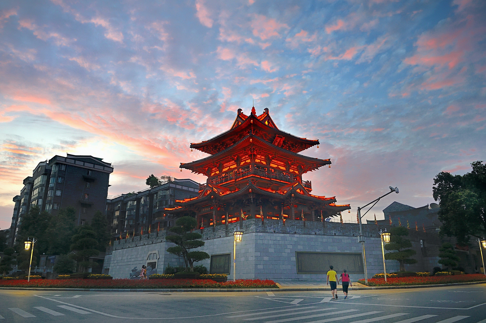
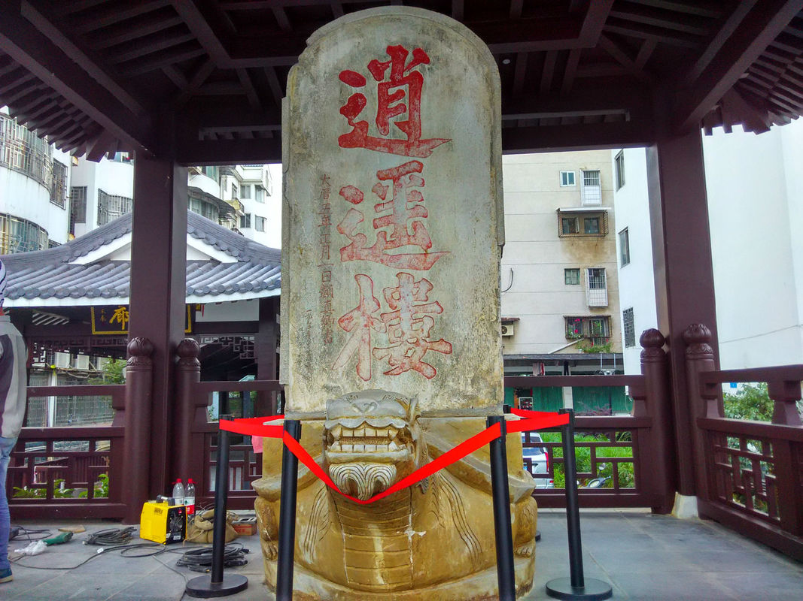
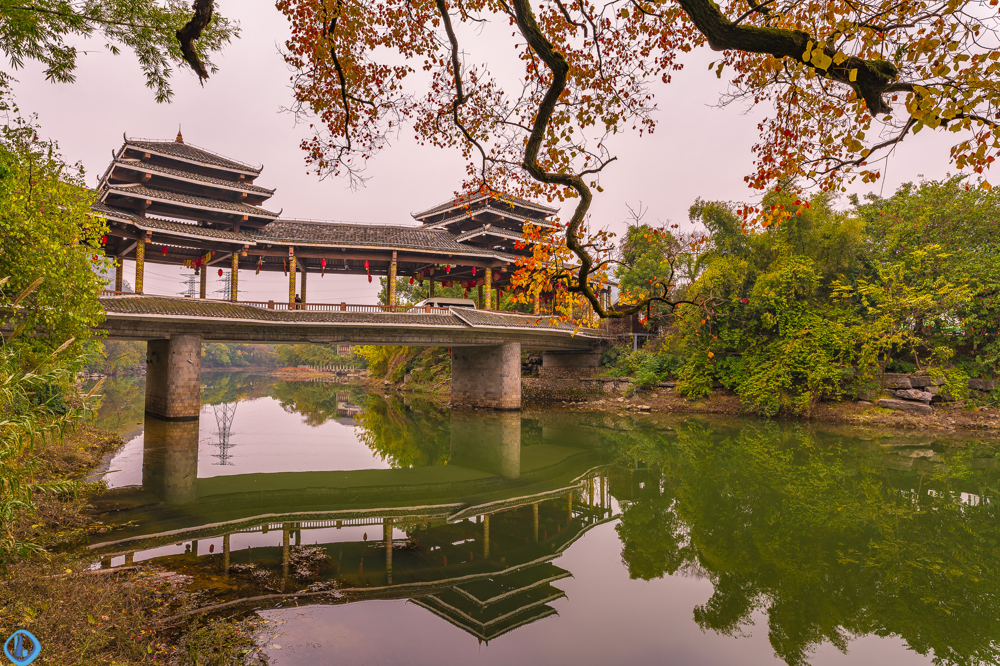
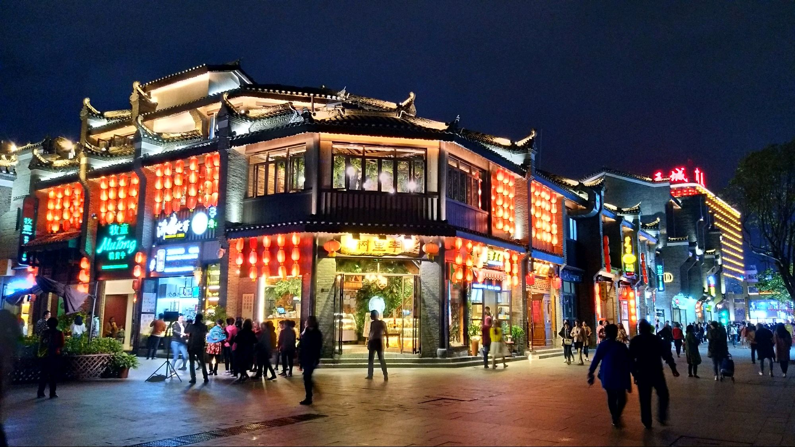

逍遥楼遗址在今桂林市区滨江路北段解放桥与伏波山之间。
为唐代桂州城之东城楼，上置颜真卿所书“逍遥楼”石刻碑一方。
颜真卿（709-785），字清臣，今陕西 西安人，唐开元间进士，
曾做过殿中侍御史、平原（今属山东）太守，后官至太子太师、封鲁郡公，
世称“颜鲁公”。其书法凝重实、雄健有力，独创一体，人谓之“颜体”。
颜真卿并没到过桂林，相传此碑是据蒲州（今山西永济）碑石钩摹重刻。
因置于东城楼，故此楼称“逍遥楼”。


日月双塔号称世界第一铜塔，是桂林旅游的一个夜景观赏地。其中日塔高41米共九层，通体均为纯铜装饰，耗用铜材350吨，并有电梯供游客观光乘坐。
阳朔县拥有漓江景区、《印象·刘三姐》、碧莲峰山水园、聚龙潭、蝴蝶泉、刘三姐水上公园、鉴山寺等营业景点15处。18年11月，荣登“2018中国幸福百县榜”。
鲁家村位于桃花江畔，风景秀丽，依山傍水，是桂林国家级风景区江畔的一个村落。
东西巷早在明清时期就盛极一时，鼎盛时还有“青龙白虎”宝地之美誉。至今是“桂林国际旅游胜地”的城市地标之作。

